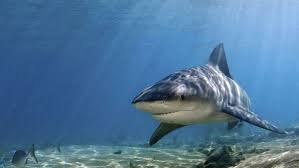

Bull sharks aren't the biggest shark, but your much more likely to be attacked by one than a great white. They love to hang out in shallow water where people think they're safe to stand. And that subtitle isn't a joke, they bite things to find out what's edible. Like your calves and thighs.
| Attacks | Deaths |
| 12 | 3 |
Data Collected in Austrailia through 2021
